[171]:
import matplotlib.pyplot as plt
import scanpy as sc
import pandas as pd
import numpy as np
import os
import anndata as ad
[241]:
test = sc.read_h5ad('/home/jialiulab/disk1/yichun/FuseMap/input_data/mouse_tissue_type_integrate_test3/merfish_mouse_colitis_062221_D9_m3_2_slice_1.h5ad')
[242]:
test.obs['y'].mean()
[242]:
-780.1002576269227
[243]:
test=test[test.obs['y'] >-770]
[244]:
test
[244]:
View of AnnData object with n_obs × n_vars = 11198 × 943
obs: 'x', 'y', 'Mouse_ID', 'Technical_repeat_number', 'Sample_type', 'Slice_ID', 'FOV', 'Cell_ID', 'sample', 'N_genes', 'Tier1', 'Tier2', 'Tier3', 'Leiden_neigh', 'Neigh_umap_x', 'Neigh_umap_y', 'Tier2_umap_x', 'Tier2_umap_y', 'Tier3_umap_x', 'Tier3_umap_y', 'Tier1_umap_x', 'Tier1_umap_y', 'cell_type', 'tissue_region', 'organ', 'species', 'technology'
var: 'n_cells', 'highly_variable', 'means', 'dispersions', 'dispersions_norm'
uns: 'Neigh_anndata', 'Sample_type_colors', 'Tier1_colors', 'Tier3_colors', 'hvg', 'leiden', 'log1p', 'neighbors', 'pca', 'umap'
obsm: 'X_pca', 'X_umap', 'spatial_input'
varm: 'PCs'
obsp: 'connectivities', 'distances'
[245]:
test.write_h5ad('/home/jialiulab/disk1/yichun/FuseMap/input_data/mouse_tissue_type_integrate_test3/merfish_mouse_colitis_062221_D9_m3_2_slice_1.h5ad')
[ ]:
integrate
[246]:
path='/home/jialiulab/disk1/yichun/FuseMap/input_data/mouse_tissue_type_integrate_test3/'
X_input = []
file_names = [
path + f
for f in os.listdir(path)
if os.path.isfile(os.path.join(path, f))
]
for ind, file_name_i in enumerate(file_names):
X = sc.read_h5ad(file_name_i)
print(file_name_i,X)
# try:
# X.obs["x"] = X.obs["col"]
# X.obs["y"] = X.obs["row"]
# except:
# print(file_name_i)
# plt.figure()
# plt.scatter(X.obs['x'],X.obs['y'],s=1)
/home/jialiulab/disk1/yichun/FuseMap/input_data/mouse_tissue_type_integrate_test3/STARmap_mouse_brain.h5ad AnnData object with n_obs × n_vars = 20857 × 1022
obs: 'orginindex', 'col', 'row', 'z', 'sample', 'n_genes_by_counts', 'log1p_n_genes_by_counts', 'total_counts', 'log1p_total_counts', 'n_genes', 'n_counts', 'batch', 'batch_s_c', 'dataset', 'leiden', 'Rank1_Defined', 'Rank2_Defined', 'Rank3_Defined', 'Rank4_Defined', 'Rank1_Refine', 'Rank2_Refine', 'Rank3_Refine', 'Rank4_Refine', 'Rank5_Symbol_1008', 'level1_name_refine', 'Sublevel Tissue Region 1110', 'final_cell_type 1110', 'racRNA_count_sagittal', 'racRNA_count_coronal', 'domain', 'x', 'y', 'gt_cell_type_main', 'gt_cell_type_sub', 'gt_tissue_region', 'gt_tissue_region_main', 'gt_tissue_region_sub', 'global_x', 'global_y', 'ccf_label', 'gtTaxonomyRank4', 'gtDescription', 'gtTissueRegion'
var: 'n_cells_by_counts', 'mean_counts', 'log1p_mean_counts', 'pct_dropout_by_counts', 'total_counts', 'log1p_total_counts'
layers: 'counts'
/home/jialiulab/disk1/yichun/FuseMap/input_data/mouse_tissue_type_integrate_test3/merfish_mouse_colitis_062221_D9_m3_2_slice_1.h5ad AnnData object with n_obs × n_vars = 11198 × 943
obs: 'x', 'y', 'Mouse_ID', 'Technical_repeat_number', 'Sample_type', 'Slice_ID', 'FOV', 'Cell_ID', 'sample', 'N_genes', 'Tier1', 'Tier2', 'Tier3', 'Leiden_neigh', 'Neigh_umap_x', 'Neigh_umap_y', 'Tier2_umap_x', 'Tier2_umap_y', 'Tier3_umap_x', 'Tier3_umap_y', 'Tier1_umap_x', 'Tier1_umap_y', 'cell_type', 'tissue_region', 'organ', 'species', 'technology'
var: 'n_cells', 'highly_variable', 'means', 'dispersions', 'dispersions_norm'
uns: 'Neigh_anndata', 'Sample_type_colors', 'Tier1_colors', 'Tier3_colors', 'hvg', 'leiden', 'log1p', 'neighbors', 'pca', 'umap'
obsm: 'X_pca', 'X_umap', 'spatial_input'
varm: 'PCs'
obsp: 'connectivities', 'distances'
/home/jialiulab/disk1/yichun/FuseMap/input_data/mouse_tissue_type_integrate_test3/visiumHD_human_Colon.h5ad AnnData object with n_obs × n_vars = 26560 × 18085
obs: 'in_tissue', 'array_row', 'array_col', 'x', 'y', 'organ', 'species', 'technology', 'sample'
var: 'gene_ids', 'feature_types', 'genome'
uns: 'spatial'
obsm: 'spatial'
/home/jialiulab/disk1/yichun/FuseMap/input_data/mouse_tissue_type_integrate_test3/cosmx_human_Lung5_Rep1.h5ad AnnData object with n_obs × n_vars = 47990 × 960
obs: 'cell_type', 'tissue_region', 'x', 'y', 'organ', 'species', 'technology', 'sample'
/home/jialiulab/disk1/yichun/FuseMap/input_data/mouse_tissue_type_integrate_test3/cosmx_human_brain.h5ad AnnData object with n_obs × n_vars = 45180 × 6278
obs: 'cell_type', 'tissue_region', 'x', 'y', 'organ', 'species', 'technology', 'sample'
read single-cell embedding
[252]:
save_dir = f"output/tissue_integrate_test1_llmcombine/"
ad_embed_o=sc.read_h5ad(f'{save_dir}/ad_celltype_embedding.h5ad')
[253]:
ad_embed=ad_embed_o
[254]:
# ad_concat = []
# for i in ad_embed_o.obs['file_name'].unique():
# ad_embed_i = ad_embed_o[ad_embed_o.obs['file_name']==i]
# ad_embed_i_sample=ad_embed_i[np.random.permutation(ad_embed_i.obs.shape[0])[:10000],:]
# ad_concat.append(ad_embed_i_sample)
# ad_embed = ad.concat(ad_concat)
[255]:
# ad_embed=ad_embed_o[np.random.permutation(ad_embed_o.obs.shape[0])[:10000],:]
sc.pp.neighbors(ad_embed, n_neighbors=50,use_rep='X')
sc.tl.umap(ad_embed)
[256]:
fig, ax = plt.subplots(figsize=(3,3))
ax = sc.pl.umap(ad_embed,color='file_name',size=1, show=False,ax=ax)
ax.set_title('Single-cell embedding, colored by sample ID')
[256]:
Text(0.5, 1.0, 'Single-cell embedding, colored by sample ID')
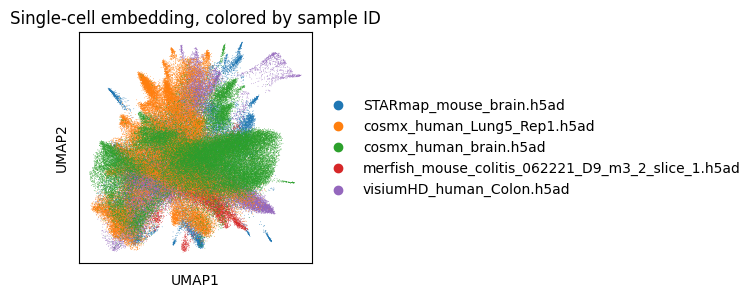
[259]:
ad_embed.obs.loc[ad_embed.obs['batch']=='sample0','organ']='Brain'
ad_embed.obs.loc[ad_embed.obs['batch']=='sample0','species']='Mouse'
[265]:
fig, ax = plt.subplots(figsize=(6,6))
ax = sc.pl.umap(ad_embed,color='species',size=1, show=False,ax=ax)
ax.set_title('Single-cell embedding, colored by sample ID')
[265]:
Text(0.5, 1.0, 'Single-cell embedding, colored by sample ID')
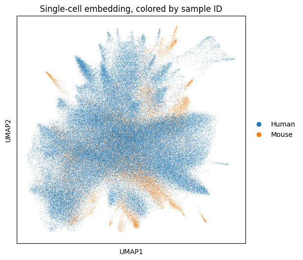
[263]:
fig, ax = plt.subplots(figsize=(6,6))
ax = sc.pl.umap(ad_embed,color='organ',size=2, show=False,ax=ax)
ax.set_title('Single-cell embedding, colored by sample ID')
[263]:
Text(0.5, 1.0, 'Single-cell embedding, colored by sample ID')
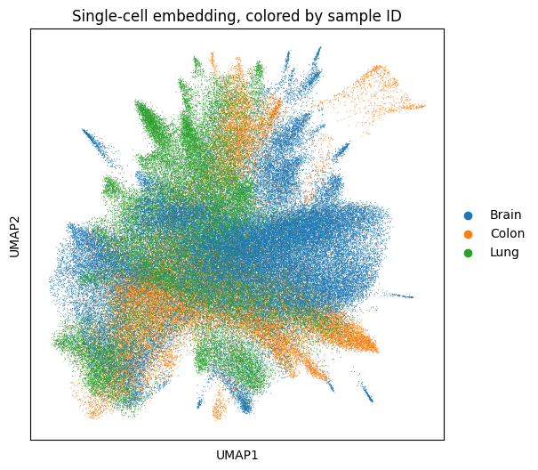
[ ]:
[257]:
fig, ax = plt.subplots(figsize=(5,5))
ax = sc.pl.umap(ad_embed[ad_embed.obs['batch']=='sample0'],color='Rank4_Refine',size=10, show=False,ax=ax)
ax.set_title('Single-cell embedding, colored by sample ID')
/home/jialiulab/.conda/envs/fusemap_glue/lib/python3.7/site-packages/anndata/compat/_overloaded_dict.py:106: ImplicitModificationWarning: Trying to modify attribute `._uns` of view, initializing view as actual.
self.data[key] = value
[257]:
Text(0.5, 1.0, 'Single-cell embedding, colored by sample ID')
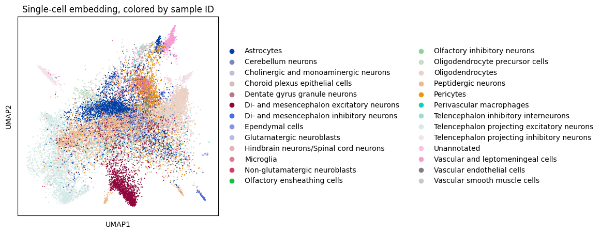
read spatial embedding
[266]:
save_dir = f"output/tissue_integrate_test1_llmcombine/"
ad_embed_o=sc.read_h5ad(f'{save_dir}/ad_tissueregion_embedding.h5ad')
[178]:
ad_concat = []
for i in ad_embed_o.obs['file_name'].unique():
ad_embed_i = ad_embed_o[ad_embed_o.obs['file_name']==i]
ad_embed_i_sample=ad_embed_i[np.random.permutation(ad_embed_i.obs.shape[0])[:10000],:]
ad_concat.append(ad_embed_i_sample)
ad_embed = ad.concat(ad_concat)
[267]:
ad_embed=ad_embed_o
[268]:
# ad_embed=ad_embed_o[np.random.permutation(ad_embed_o.obs.shape[0])[:10000],:]
sc.pp.neighbors(ad_embed, n_neighbors=50,use_rep='X')
sc.tl.umap(ad_embed)
[270]:
fig, ax = plt.subplots(figsize=(5,5))
ax = sc.pl.umap(ad_embed,color='file_name',size=1, show=False,ax=ax)
ax.set_title('Spatial embedding, colored by sample ID')
[270]:
Text(0.5, 1.0, 'Spatial embedding, colored by sample ID')
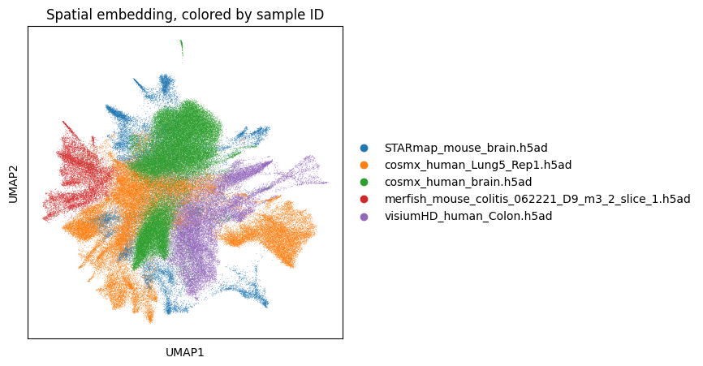
[120]:
import numpy as np
color_map=np.random.rand(ad_embed.obs['leiden'].nunique(),3)
dict_all={}
for i in range(ad_embed.obs['leiden'].nunique()):
dict_all[ad_embed.obs['leiden'].cat.categories[i]]=color_map[i]
[121]:
for ind in range(ad_embed.obs['batch'].nunique()):
plt.figure()
ad_plot=ad_embed[ad_embed.obs['batch']==f'sample{ind}']
plt.scatter(ad_plot.obs['x'],
ad_plot.obs['y'],
c=[dict_all[i] for i in ad_plot.obs['leiden']],s=3)
plt.title(ad_plot.obs['file_name'][0])
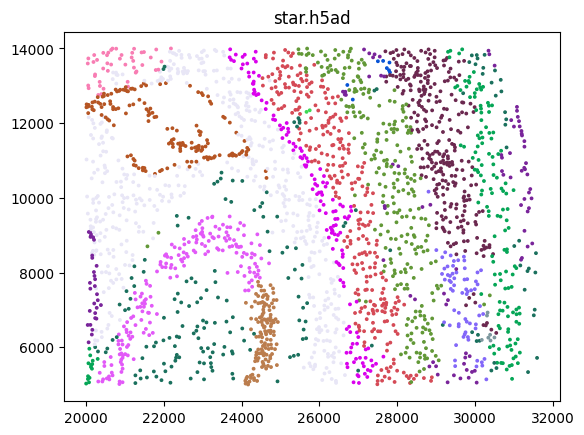
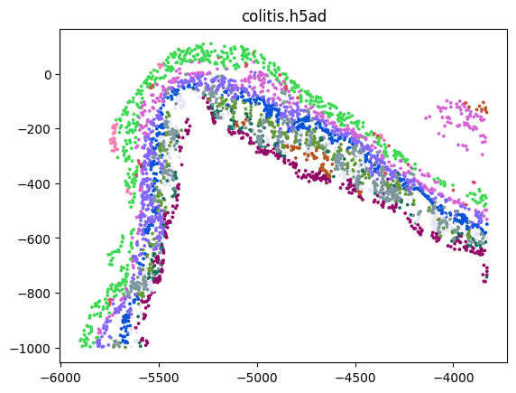
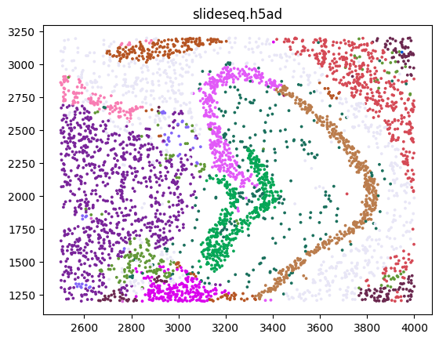
[84]:
plt.figure()
ad_plot=ad_embed[ad_embed.obs['batch']=='sample1']
plt.scatter(ad_plot.obs['x'],
ad_plot.obs['y'],
c=[dict_all[i] for i in ad_plot.obs['leiden']],s=3)
[84]:
<matplotlib.collections.PathCollection at 0x7f4b7c7a0b10>
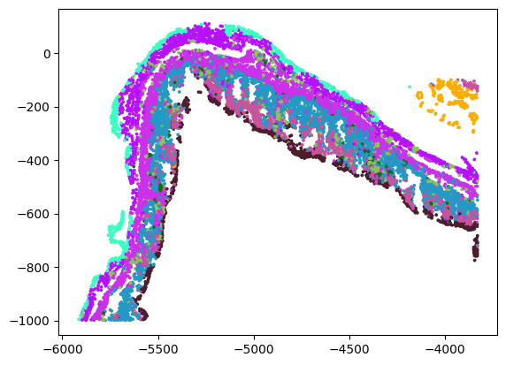
read gene embedding
[182]:
import scanpy as sc
save_dir = f"output/mouse_tissue_integrate_test3_llmcombine/"
ad_embed=sc.read_h5ad(f'{save_dir}/ad_gene_embedding.h5ad')
sc.pp.neighbors(ad_embed, n_neighbors=50,use_rep='X')
sc.tl.umap(ad_embed)
[186]:
ad_embed.obs['type'] = 'type'+ad_embed.obs['type'].astype('str')
[191]:
ad_embed_o[ad_embed_o.obs['batch']=='sample1'].obs
[191]:
| x | y | name | batch | file_name | Mouse_ID | Technical_repeat_number | Sample_type | Slice_ID | FOV | ... | gt_cell_type_sub | gt_tissue_region | gt_tissue_region_main | gt_tissue_region_sub | global_x | global_y | ccf_label | gtTaxonomyRank4 | gtDescription | gtTissueRegion | |
|---|---|---|---|---|---|---|---|---|---|---|---|---|---|---|---|---|---|---|---|---|---|
| MBASSdd83_AAAAAAAAAAAGTA-1 | 1262.1 | 3329.6 | section1 | sample1 | slideseq_Puck40.h5ad | NaN | NaN | NaN | NaN | NaN | ... | NaN | NaN | NaN | NaN | NaN | NaN | NaN | NaN | NaN | NaN |
| MBASSdd83_AAAAAAAAAATACT-1 | 4656.6 | 1230.5 | section1 | sample1 | slideseq_Puck40.h5ad | NaN | NaN | NaN | NaN | NaN | ... | NaN | NaN | NaN | NaN | NaN | NaN | NaN | NaN | NaN | NaN |
| MBASSdd83_AAAAAAAAACTGAA-1 | 4619.4 | 1618.0 | section1 | sample1 | slideseq_Puck40.h5ad | NaN | NaN | NaN | NaN | NaN | ... | NaN | NaN | NaN | NaN | NaN | NaN | NaN | NaN | NaN | NaN |
| MBASSdd83_AAAAAAACTGTTCA-1 | 1614.6 | 1472.8 | section1 | sample1 | slideseq_Puck40.h5ad | NaN | NaN | NaN | NaN | NaN | ... | NaN | NaN | NaN | NaN | NaN | NaN | NaN | NaN | NaN | NaN |
| MBASSdd83_AAAAACCCTCCTCT-1 | 3042.1 | 3460.5 | section1 | sample1 | slideseq_Puck40.h5ad | NaN | NaN | NaN | NaN | NaN | ... | NaN | NaN | NaN | NaN | NaN | NaN | NaN | NaN | NaN | NaN |
| ... | ... | ... | ... | ... | ... | ... | ... | ... | ... | ... | ... | ... | ... | ... | ... | ... | ... | ... | ... | ... | ... |
| MBASSdd83_TTTTTTTTTGTGTA-1 | 2484.9 | 828.6 | section1 | sample1 | slideseq_Puck40.h5ad | NaN | NaN | NaN | NaN | NaN | ... | NaN | NaN | NaN | NaN | NaN | NaN | NaN | NaN | NaN | NaN |
| MBASSdd83_TTTTTTTTTTATTG-1 | 3712.8 | 1569.8 | section1 | sample1 | slideseq_Puck40.h5ad | NaN | NaN | NaN | NaN | NaN | ... | NaN | NaN | NaN | NaN | NaN | NaN | NaN | NaN | NaN | NaN |
| MBASSdd83_TTTTTTTTTTGAGT-1 | 1909.5 | 3818.2 | section1 | sample1 | slideseq_Puck40.h5ad | NaN | NaN | NaN | NaN | NaN | ... | NaN | NaN | NaN | NaN | NaN | NaN | NaN | NaN | NaN | NaN |
| MBASSdd83_TTTTTTTTTTGGTT-1 | 4595.3 | 4240.2 | section1 | sample1 | slideseq_Puck40.h5ad | NaN | NaN | NaN | NaN | NaN | ... | NaN | NaN | NaN | NaN | NaN | NaN | NaN | NaN | NaN | NaN |
| MBASSdd83_TTTTTTTTTTTTAG-1 | 3324.9 | 1238.1 | section1 | sample1 | slideseq_Puck40.h5ad | NaN | NaN | NaN | NaN | NaN | ... | NaN | NaN | NaN | NaN | NaN | NaN | NaN | NaN | NaN | NaN |
46965 rows × 94 columns
[187]:
ad_embed.obs
[187]:
| sample0 | sample1 | sample2 | sample3 | type | |
|---|---|---|---|---|---|
| 0610009B22RIK | sample_1 | type_sample_1__ | |||
| 0610009E02RIK | sample_1 | type_sample_1__ | |||
| 0610009L18RIK | sample_1 | type_sample_1__ | |||
| 0610010F05RIK | sample_1 | type_sample_1__ | |||
| 0610012G03RIK | sample_1 | type_sample_1__ | |||
| ... | ... | ... | ... | ... | ... |
| ZXDC | sample_1 | type_sample_1__ | |||
| ZYG11B | sample_1 | sample_3 | type_sample_1__sample_3 | ||
| ZYX | sample_1 | sample_3 | type_sample_1__sample_3 | ||
| ZZEF1 | sample_1 | type_sample_1__ | |||
| ZZZ3 | sample_1 | sample_3 | type_sample_1__sample_3 |
19868 rows × 5 columns
[188]:
ax = sc.pl.umap(ad_embed,color='type', size=10,show=False)
ax.set_title('Gene embedding, colored by sample ID')
[188]:
Text(0.5, 1.0, 'Gene embedding, colored by sample ID')
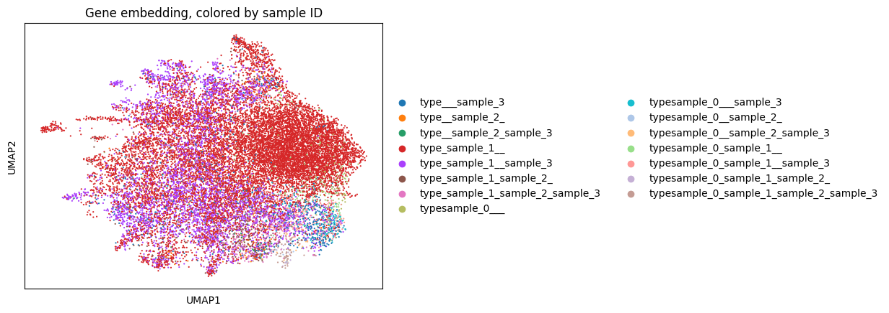
map
[34]:
import scanpy as sc
save_dir = f"output/tutorial_map2/"
ad_embed=sc.read_h5ad(f'{save_dir}/ad_celltype_embedding.h5ad')
sc.pp.neighbors(ad_embed, n_neighbors=50,use_rep='X')
sc.tl.umap(ad_embed)
ax = sc.pl.umap(ad_embed,color='batch',size=1, show=False)
ax.set_title('Single-cell embedding, colored by sample ID')
[34]:
Text(0.5, 1.0, 'Single-cell embedding, colored by sample ID')
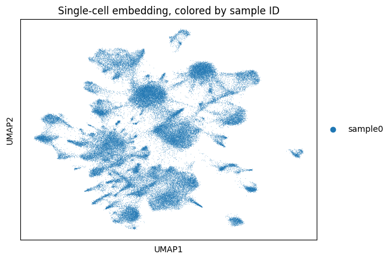
[35]:
ad_embed
[35]:
AnnData object with n_obs × n_vars = 83546 × 64
obs: 'x', 'y', 'name', 'batch', 'fusemap_celltype'
uns: 'neighbors', 'umap', 'batch_colors'
obsm: 'X_umap'
obsp: 'distances', 'connectivities'
[36]:
sc.pl.umap(ad_embed,color='fusemap_celltype',size=1)
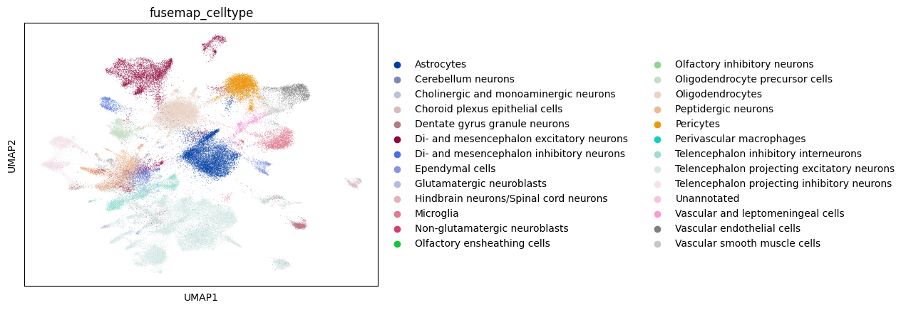
[46]:
import scanpy as sc
save_dir = f"output/AD_map2/"
ad_embed=sc.read_h5ad(f'{save_dir}/ad_celltype_embedding.h5ad')
sc.pp.neighbors(ad_embed, n_neighbors=50,use_rep='X')
sc.tl.umap(ad_embed)
ax = sc.pl.umap(ad_embed,color='batch',size=1, show=False)
ax.set_title('Single-cell embedding, colored by sample ID')
/home/jialiulab/.conda/envs/fusemap_glue/lib/python3.7/site-packages/anndata/_core/anndata.py:1828: UserWarning: Observation names are not unique. To make them unique, call `.obs_names_make_unique`.
utils.warn_names_duplicates("obs")
[46]:
Text(0.5, 1.0, 'Single-cell embedding, colored by sample ID')
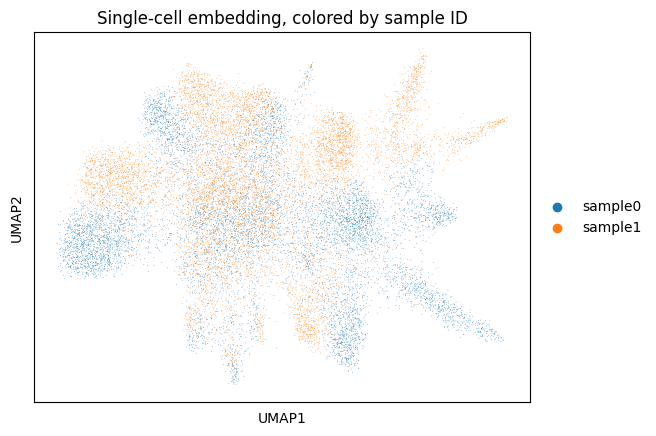
[1]:
import scanpy as sc
save_dir = f"output/AD_map1/"
ad_embed=sc.read_h5ad(f'{save_dir}/ad_celltype_embedding.h5ad')
sc.pp.neighbors(ad_embed, n_neighbors=50,use_rep='X')
sc.tl.umap(ad_embed)
ax = sc.pl.umap(ad_embed,color='batch',size=1, show=False)
ax.set_title('Single-cell embedding, colored by sample ID')
/home/jialiulab/.conda/envs/fusemap_glue/lib/python3.7/site-packages/anndata/_core/anndata.py:1828: UserWarning: Observation names are not unique. To make them unique, call `.obs_names_make_unique`.
utils.warn_names_duplicates("obs")
/home/jialiulab/.conda/envs/fusemap_glue/lib/python3.7/site-packages/tqdm/auto.py:22: TqdmWarning: IProgress not found. Please update jupyter and ipywidgets. See https://ipywidgets.readthedocs.io/en/stable/user_install.html
from .autonotebook import tqdm as notebook_tqdm
OMP: Info #276: omp_set_nested routine deprecated, please use omp_set_max_active_levels instead.
[1]:
Text(0.5, 1.0, 'Single-cell embedding, colored by sample ID')
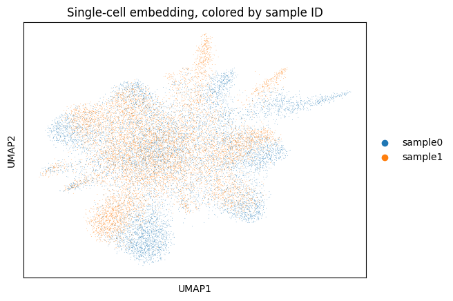
[48]:
ad_embed
[48]:
AnnData object with n_obs × n_vars = 19062 × 64
obs: 'x', 'y', 'name', 'batch', 'top_level_cell_type', 'fusemap_celltype'
uns: 'neighbors', 'umap', 'batch_colors', 'fusemap_celltype_colors'
obsm: 'X_umap'
obsp: 'distances', 'connectivities'